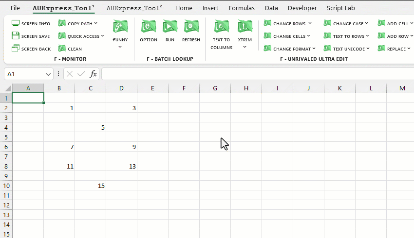
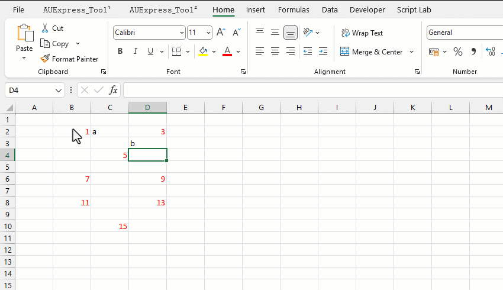

VD1: Thay đổi màu các ô chứa nội dung (các ô trống dữ liệu sẽ không thay đổi).
VD2: Chọn các ô có font màu đỏ và đổi màu nền của nó.
Related function
CHANGE ROWS (feature) Thiết lập ẩn, xóa hoặc chọn nhóm các hàng thỏa mãn điều kiện chỉ định.
FLOOKUP Nhập liệu nâng cao, hỗ trợ tra cứu (lọc) và xuất nhanh dữ liệu dựa trên từ khóa.
Return to Home